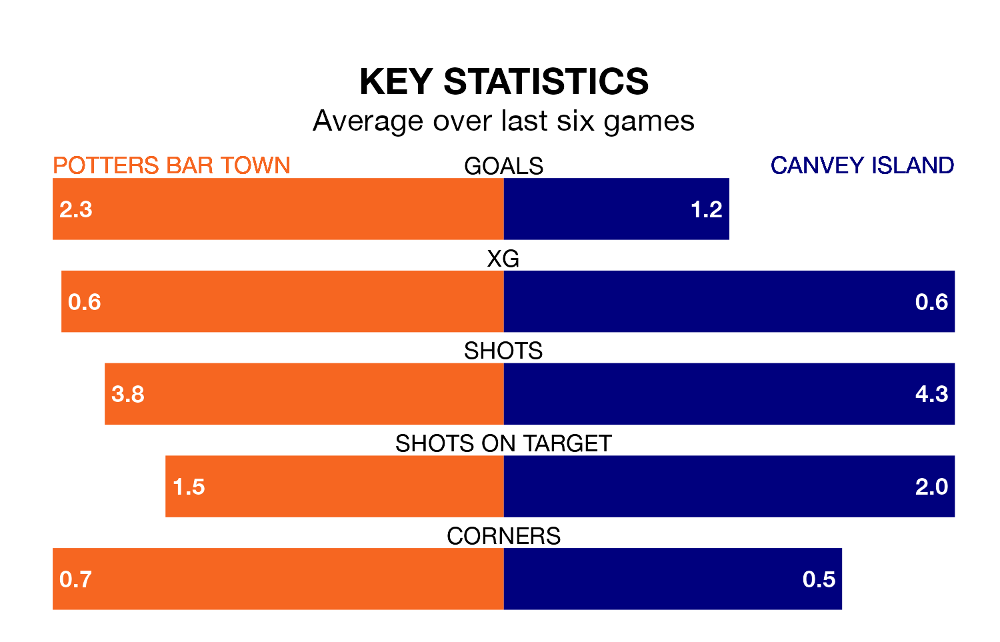

Canvey Island travel to Potters Bar Town on Saturday in the Isthmian Premier Division.
The visitors come into the game on the back of a win in their last match, having beaten Whitehawk 2-0 away.
Potters Bar, meanwhile, lost their last match, 3-1 against Wingate and Finchley.
With 56 goals in 33 games so far this season, Potters Bar are scoring more than average in the league with 1.7 goals per game. And they are conceding at an average rate, letting in 52 goals at a rate of 1.6 per game.
Canvey Island, meanwhile, are below average scorers, with 1.5 goals per game, compared to a league average of 1.6. They have conceded 1.9 goals per game.
Town are in good form in the Isthmian Premier Division, with four wins and a draw from their last six games.
With a win and two draws over that period, the Gulls' form is much worse – they have taken five points from 18, compared to the home side's 13.
The visitors are 17th in the table after 36 games, of which they have won 13 and drawn five, earning 44 points.
Potters Bar are four places ahead of Canvey Island in 13th, with 13 wins and nine draws putting them on 48 points.
In the last three years, Potters Bar and Canvey Island have played each other on three occasions. Potters Bar won one of them and Canvey Island the other.
Their last meeting was on December 16, when Potters Bar won 4-1 away.
Updated: 16:41 (UTC), 04/04/24